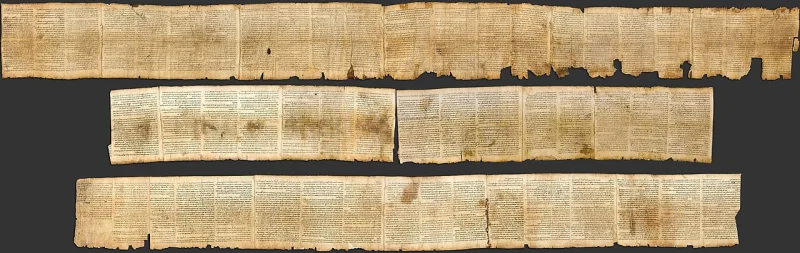
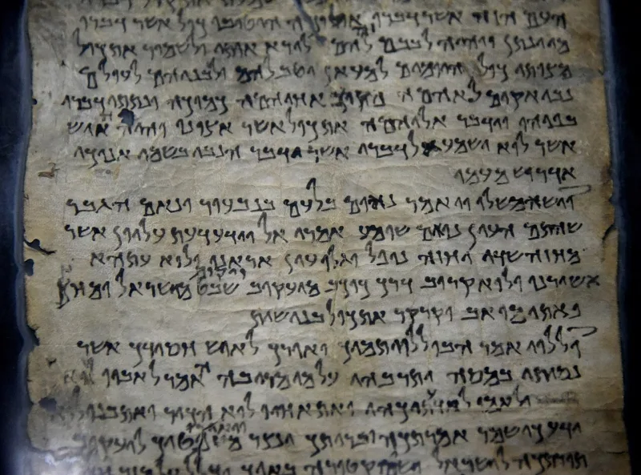
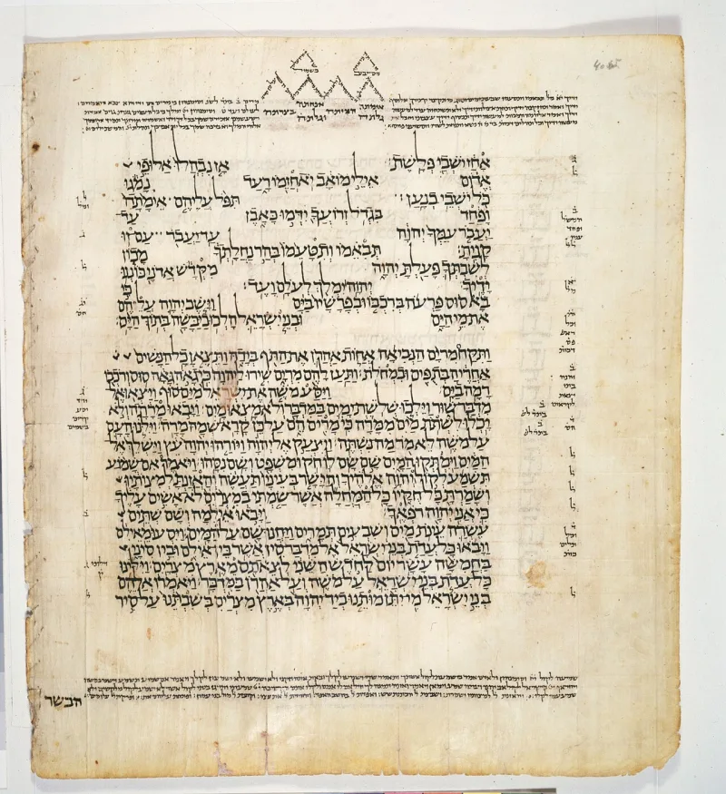

No good counter-argument has been published by LDS scholars.
The 1611 translators got some Hebrew words wrong. Those mistakes belong to their English.
They are not in the Hebrew text at all.
2 Nephi 14:5 has "upon all the glory shall be a defence." The Hebrew word there, chuppah, means canopy. 2 Nephi 21:3 has "make him of quick understanding," where the Hebrew says his delight shall be in the fear of the LORD.
And 2 Nephi 16:2 keeps the King James double plurals seraphims and cherubims. Hebrew already makes those words plural.
These are marks of one English committee's work in 1611. A translation made from a Hebrew source would not carry them.
FAIR says a translation aimed at King James readers may keep familiar wording even where it is imperfect. Some of the disputed lines are defensible readings of ambiguous Hebrew.
And D&C 1:24 says God speaks to people after the manner of their language. So the errors sit in the English layer, not on the plates.
Strong for you. The King James artifacts are granted.
The defence moves them into a translation convention. And no variant anywhere pulls the wording back toward the Hebrew.
"If the Hebrew word means canopy, why does your book say defence?"



The errors sit in the English translation layer, not on the ancient plates.
FAIR argues that a functional translation aimed at King James readers may keep familiar wording. That holds even where the wording is imperfect. Some of the alleged errors are also fair readings of Hebrew that is genuinely unclear.
There is a scriptural warrant too. D&C 1:24 has God speaking to people after the manner of their language. On that account the errors belong to the English layer. They do not belong to the plates.
Strong for you: the King James marks are granted, then moved somewhere else.
The King James marks are conceded. The defence moves them into a translation habit given by God. It does not show that the readings are anything but King James errors.
And one thing is missing. No variant anywhere pulls the wording back toward the Hebrew. If God were correcting the 1611 committee, you would expect that somewhere.